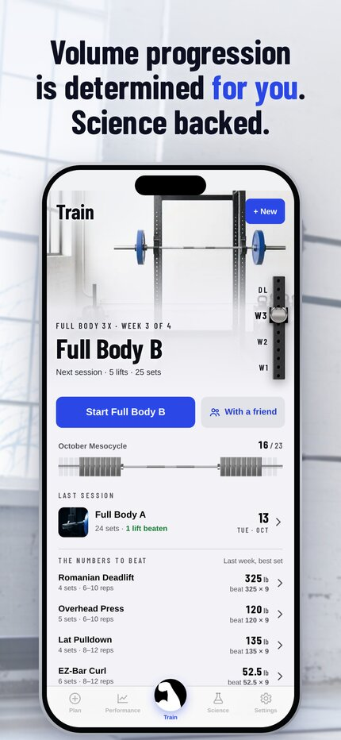
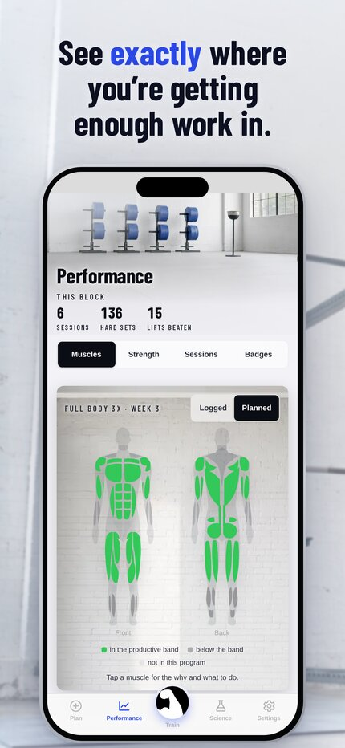
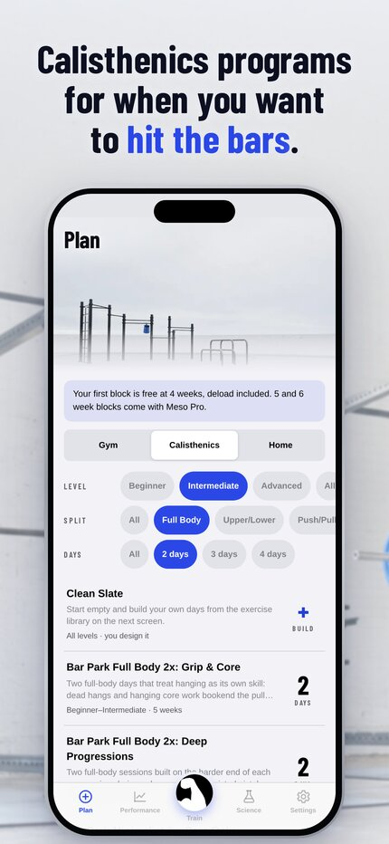
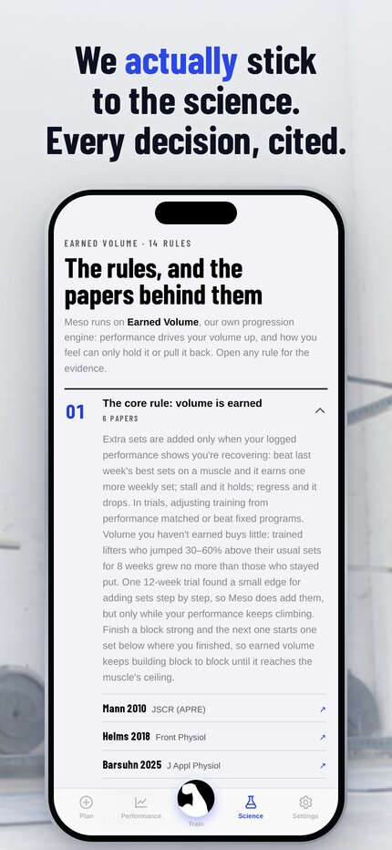
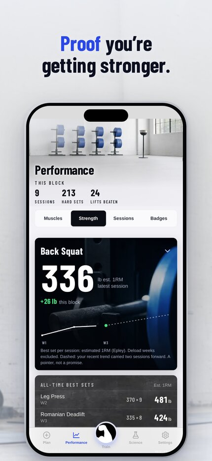
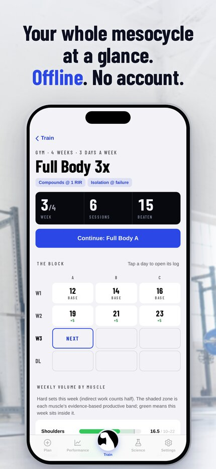

Press kit
Meso: Hypertrophy Coach
Meso is a muscle-building training app for iPhone that writes next week from what you actually lifted. Its progression engine, Earned Volume, adds a weekly set to a muscle only when you beat last week’s performance on it; soreness, workload and joint pain can hold volume or pull it back, but never push it up. Every rule the engine follows is written out in plain language in the app, with the published research behind it. Meso ships 123 programs and 311 exercises for the gym, home and the bar park, works offline, and needs no account.
Key facts
- Founder
- Nathan Salt, who designs and builds Meso as a solo developer in Australia
- Platform
- iPhone and iPad, on the App Store
- Account
- None. Meso is local-first: training data stays on the device and the app works offline. Backups are a file you save yourself.
- Engine
- Earned Volume, Meso’s own progression engine. Every rule carries citations to the research, readable in the app’s Science tab.
- Library
- 123 programs and 311 exercises across gym, home and calisthenics
- Business model
- The first mesocycle is free. Meso Pro unlocks longer programs and continued training.
- Contact
- support@mesohypertrophy.com, the same address as Support. Put “Press” in the subject.
What makes it different
- Volume is earned, not scheduled. A muscle gets one more weekly set only when its lifts beat last week. Stall and it holds; regress and it drops.
- How you feel is a brake, never an accelerator. Soreness, workload and joint pain can hold or reduce volume. They can never add it.
- The evidence is in the app. Each rule is explained in plain language with the papers behind it, and where an exact number is convention rather than settled evidence, the app says so.
- Bodyweight training progresses too. Calisthenics and home programs advance to a harder variation when you top the rep range, and switch to load progression when you log vest weight.
- Deloads come on schedule, or early when the data says so. Two weeks of falling performance across several muscles brings the deload forward.
- No account, no server. Meso works offline and keeps training data on the device.
App icon
A white flexed arm on a black tile. Please use it as supplied: no recolouring, outlines or added effects.


Screenshots
Current App Store screenshots, iPhone, 1290 by 2796 pixels. Tap a link for the full-size PNG.












Health note
Meso provides training guidance, not medical advice.